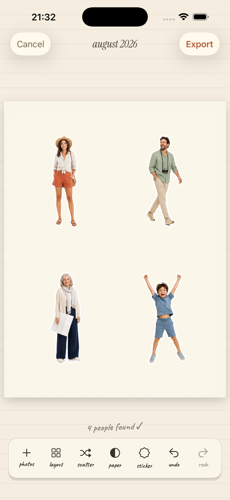
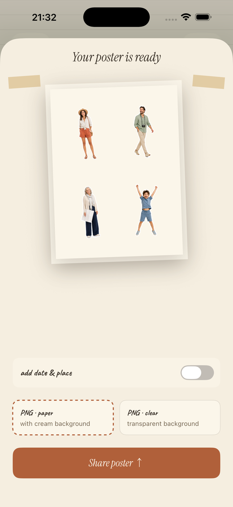
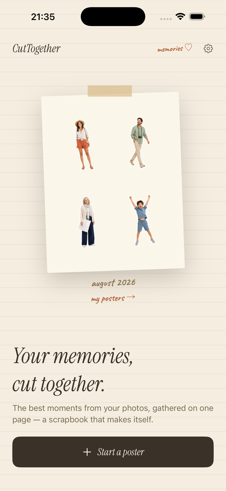

Bring your travel photos
together, person by person.
CutTogether finds everyone in the photos you pick, cuts them out as stickers, and lays them onto a single scrapbook poster. The cut-outs are automatic; you choose where to place them.
Download on theApp Store


From camera roll to one page, in three steps.
Pick up to 20 photos
Straight from the photo picker. No album to build, no tagging, no sorting.
Everyone gets cut out
Apple's Vision framework finds each person on your device and lifts them off the background — several people per photo.
The poster builds itself
Stickers land on the paper one by one. Drag, pinch, rotate or scatter until it feels like yours, then export a PNG.
A scrapbook page, not a photo editor.



Your photos never leave the device.
There is no server and no sign-in. Photo analysis, background removal and rendering all happen on your iPhone, and the only photos the app can see are the ones you hand it in the system picker — they are never uploaded. The app does count anonymous usage, like which screens get reached, to find where it falls short. Those counts carry nothing from your photos or your captions.
Ways to make the poster your own.
Nothing leaves your iPhone
Detection and background removal run on device. No upload, no account, no analytics.
Die-cut sticker edges
A white, cream, ink or terracotta outline traces each cut-out — or none at all.
Four papers
White, cream, ink and kraft, plus a transparent export for putting people anywhere.
Dated from the photos
The handwritten caption reads the capture date out of the photos themselves.
Your poster library
Every poster you share is kept, ready to re-share or delete.
Four languages
English, 한국어, 日本語, 繁體中文 — each with its own display and handwriting type.
Make a poster of the people you shared the trip with.
Available now for iPhone and iPad.
Download on theApp Store